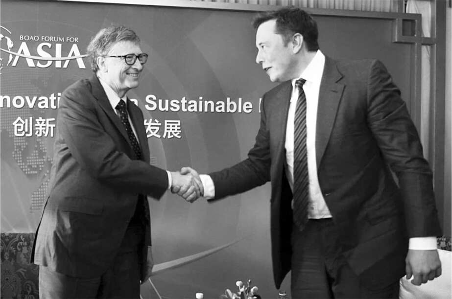

Chuyến thăm
"Này, tôi rất muốn đến gặp anh và nói chuyện về từ thiện và khí hậu", Bill Gates nói với Musk khi họ tình cờ gặp nhau tại một cuộc họp vào đầu năm 2022. Việc bán cổ phiếu của Musk đã khiến ông, vì lý do thuế, phải bỏ 5,7 tỷ đô la vào một quỹ từ thiện mà ông đã thành lập. Gates, người khi đó dành phần lớn thời gian cho công việc từ thiện, có nhiều đề xuất mà ông muốn đưa ra.
Họ đã có vài lần gặp gỡ thân thiện trước đây, chẳng hạn như khi Gates đưa con trai Rory đến SpaceX. Musk, người luôn yêu thích hệ điều hành Microsoft hơn hầu hết các chuyên gia công nghệ khác, có thể đồng cảm với một người đã xây dựng công ty bằng sự kiên trì và quyết liệt. Họ đồng ý sắp xếp một cuộc gặp, và Gates, với đội ngũ trợ lý và lên lịch trình, nói rằng văn phòng của ông sẽ liên hệ với người lên lịch của Musk.
"Tôi không có người lên lịch," Musk trả lời. Anh đã quyết định không cần trợ lý cá nhân và người lên lịch vì muốn toàn quyền kiểm soát lịch trình của mình. "Cứ bảo thư ký của anh gọi thẳng cho tôi." Gates, người cho rằng việc Musk không có người lên lịch là "kỳ lạ", cảm thấy hơi ngại khi để trợ lý gọi cho Musk, nên ông đã tự mình gọi và sắp xếp thời gian gặp mặt tại Austin.
"Vừa hạ cánh," Gates nhắn tin vào chiều ngày 9 tháng 3 năm 2022.
"Tuyệt," Musk đáp lại, và cử Omead Afshar xuống cổng Gigafactory để đón Gates.
Trong nhóm người hiếm hoi từng giữ danh hiệu người giàu nhất thế giới, Musk và Gates có một số điểm tương đồng. Cả hai đều có tư duy phân tích, khả năng tập trung cao độ và sự tự tin trí tuệ đôi khi hơi kiêu ngạo. Cả hai đều không thích những người kém cỏi. Tất cả những đặc điểm này khiến họ có khả năng xảy ra xung đột, và điều đó đã xảy ra khi Musk bắt đầu dẫn Gates tham quan nhà máy.
Gates lập luận rằng pin sẽ không bao giờ đủ mạnh để cung cấp năng lượng cho xe tải hạng nặng và năng lượng mặt trời sẽ không phải là giải pháp chính cho vấn đề khí hậu. "Tôi đã cho anh ấy xem các con số," Gates nói. "Đó là một lĩnh vực mà rõ ràng tôi biết điều anh ấy không biết." Ông cũng chất vấn Musk về sao Hỏa. "Tôi không phải là người quan tâm đến sao Hỏa," Gates sau đó nói với tôi. "Anh ta quá cuồng sao Hỏa. Tôi để anh ta giải thích suy nghĩ về sao Hỏa của mình, mà theo tôi là khá kỳ quặc. Đó là một suy nghĩ điên rồ kiểu như có thể sẽ có chiến tranh hạt nhân trên Trái Đất, và những người trên sao Hỏa sẽ quay trở lại, và, bạn biết đấy, sống sót sau khi chúng ta tự giết lẫn nhau."
Tuy nhiên, Gates thấy ấn tượng với nhà máy mà Musk đã xây dựng và kiến thức chi tiết của anh về mọi máy móc và quy trình. Ông cũng ngưỡng mộ SpaceX vì đã triển khai một chòm sao vệ tinh Starlink lớn để cung cấp internet từ không gian. "Starlink là hiện thực hóa những gì tôi đã cố gắng làm với Teledesic hai mươi năm trước," ông nói.
Cuối chuyến tham quan, cuộc trò chuyện chuyển sang chủ đề từ thiện. Musk bày tỏ quan điểm rằng hầu hết hoạt động từ thiện là "vô nghĩa". Anh ước tính chỉ có tác động hai mươi xu cho mỗi đô la bỏ ra. Anh ta có thể làm tốt hơn cho biến đổi khí hậu bằng cách đầu tư vào Tesla.
"Này, tôi sẽ cho anh xem năm dự án, mỗi dự án trị giá một trăm triệu đô la," Gates đáp. Ông liệt kê tiền dành cho người tị nạn, trường học Mỹ, thuốc chữa AIDS, diệt trừ một số loại muỗi thông qua chỉnh sửa gen và hạt giống biến đổi gen có thể chống lại tác động của biến đổi khí hậu. Gates rất tâm huyết với hoạt động từ thiện, và ông hứa sẽ viết cho Musk một "bản mô tả rất dài về các ý tưởng".
Có một vấn đề gây tranh cãi mà họ phải giải quyết. Gates đã bán khống cổ phiếu Tesla, đặt cược lớn rằng giá trị của nó sẽ giảm. Ông đã sai. Vào thời điểm ông đến Austin, ông đã mất 1,5 tỷ đô la. Musk đã nghe về điều đó và rất tức giận. Những người bán khống nằm trong nhóm người mà anh ta ghét nhất. Gates nói rằng ông xin lỗi, nhưng điều đó không làm Musk nguôi giận. "Tôi đã xin lỗi anh ấy," Gates nói. "Khi nghe tôi bán khống cổ phiếu, anh ấy đã rất khó chịu với tôi, nhưng anh ấy khó chịu với rất nhiều người, nên bạn không cần phải để bụng quá."
Sự bất đồng phản ánh tư duy khác biệt. Khi tôi hỏi Gates tại sao ông bán khống cổ phiếu Tesla, ông giải thích rằng ông đã tính toán nguồn cung xe điện sẽ vượt cầu, khiến giá giảm. Tôi gật đầu nhưng vẫn thắc mắc: Tại sao ông lại bán khống? Gates nhìn tôi như thể tôi chưa hiểu lời giải thích của ông và sau đó trả lời như thể câu trả lời hiển nhiên: ông nghĩ rằng bằng cách bán khống Tesla, ông có thể kiếm tiền.
Cách suy nghĩ đó hoàn toàn xa lạ với Musk. Ông tin vào sứ mệnh chuyển đổi thế giới sang xe điện và dồn hết tiền bạc vào mục tiêu đó, ngay cả khi nó có vẻ không phải là một khoản đầu tư an toàn. “Làm sao ai đó có thể nói rằng họ đam mê chống biến đổi khí hậu rồi lại làm điều gì đó làm giảm tổng đầu tư vào công ty đang nỗ lực nhất cho việc này?” ông hỏi tôi vài ngày sau chuyến thăm của Gates. “Đó là sự đạo đức giả. Tại sao lại kiếm tiền từ sự thất bại của một công ty xe năng lượng bền vững?”
Grimes đưa ra cách hiểu riêng của cô: “Tôi nghĩ đó giống như một cuộc so kè.”
Giữa tháng 4, Gates gửi cho Musk tài liệu về các lựa chọn từ thiện mà ông đã tự tay viết như đã hứa. Musk trả lời bằng tin nhắn với một câu hỏi đơn giản: "Ông vẫn còn đang bán khống nửa tỷ đô la cổ phiếu Tesla chứ?"
Gates đang ngồi trong phòng ăn của khách sạn Four Seasons ở Washington, DC, cùng con trai Rory, người vừa bắt đầu học cao học. Ông cười, đưa tin nhắn cho Rory xem và hỏi lời khuyên về cách trả lời.
"Cứ nói đúng sự thật, rồi nhanh chóng chuyển chủ đề," Rory gợi ý.
Gates làm theo. "Rất tiếc phải nói rằng tôi vẫn chưa đóng vị thế," ông nhắn lại. "Tôi muốn thảo luận về các cơ hội từ thiện."
Điều đó không hiệu quả. "Rất tiếc," Musk lập tức đáp trả. "Tôi không thể coi trọng hoạt động từ thiện về khí hậu của ông khi ông đang bán khống một lượng lớn cổ phiếu Tesla, công ty đang nỗ lực nhất để giải quyết biến đổi khí hậu."
Khi tức giận, Musk có thể trở nên cay nghiệt, đặc biệt là trên Twitter. Ông đăng một bức ảnh Gates mặc áo golf với bụng phệ trông gần như đang mang bầu. "Trong trường hợp bạn cần xẹp 'cậu nhỏ' nhanh chóng," dòng bình luận của Musk viết.
Gates thực sự bối rối không hiểu tại sao Musk lại khó chịu khi ông bán khống cổ phiếu. Và Musk cũng bối rối không kém khi Gates lại thấy điều đó khó hiểu. "Đến lúc này, tôi tin chắc rằng hắn ta hoàn toàn điên rồ (và là một tên khốn nạn)," Musk nhắn tin cho tôi ngay sau cuộc trao đổi với Gates. "Tôi thực sự đã muốn thích hắn ta (haiz)."
Về phần mình, Gates tỏ ra lịch sự hơn nhiều. Cuối năm đó, tại một bữa tối ở Washington, DC, nơi mọi người đang chỉ trích Musk, Gates nói: "Bạn có thể cảm thấy bất cứ điều gì bạn muốn về hành vi của Elon, nhưng không ai trong thời đại chúng ta làm được nhiều hơn anh ấy để thúc đẩy ranh giới của khoa học và đổi mới."
Từ thiện
Musk ít quan tâm đến hoạt động từ thiện trong nhiều năm. Ông cảm thấy rằng điều tốt nhất ông có thể làm cho nhân loại là giữ tiền của mình được sử dụng trong các công ty theo đuổi năng lượng bền vững, khám phá không gian và an toàn trí tuệ nhân tạo.
Vài ngày sau khi Bill Gates đến thăm ông với những đề xuất từ thiện, Musk ngồi xuống một chiếc bàn trống trên tầng lửng nhìn xuống dây chuyền lắp ráp tại nhà máy Giga Texas mới của Tesla cùng Birchall và bốn cố vấn lập kế hoạch bất động sản. Mặc dù không bị Gates thuyết phục tham gia vào hoạt động từ thiện, ông vẫn muốn có ý tưởng để tài trợ cho một thứ gì đó mang tính vận hành hơn một quỹ truyền thống.
Birchall đề xuất thành lập một công ty mẹ phi lợi nhuận, giống như một doanh nghiệp dẫn dắt và tài trợ cho nhiều công ty phi lợi nhuận khác dưới sự bảo trợ của mình. Theo Birchall giải thích, cấu trúc này sẽ tương tự như Viện Y khoa Howard Hughes. "Chúng tôi sẽ thực hiện từng bước một," Birchall nói với tôi, "nhưng cuối cùng nó có thể trở thành một thứ gì đó rất lớn, có thể là một học viện giáo dục đại học hoàn chỉnh."
Mặc dù Musk thấy ý tưởng này hấp dẫn, nhưng anh chưa sẵn sàng cam kết. "Tôi còn quá nhiều thứ khác phải suy nghĩ lúc này," anh nói khi rời khỏi bàn.
Đúng vậy. Hôm đó - ngày 6 tháng 4 năm 2022 - anh đang chuẩn bị cho lễ khai trương Giga Texas, và đã dành cả buổi sáng để kiểm tra dây chuyền lắp ráp Model Y và phê duyệt chi tiết cho bữa tiệc Giga Rodeo đang được lên kế hoạch. Đó cũng là ngày anh có cuộc họp trực tuyến với các quan chức Nhà Trắng về thương mại, Trung Quốc và trợ cấp pin. Và sau đó là vấn đề chiếm hầu hết tâm trí anh hôm đó: một lời đề nghị mà anh vừa chấp nhận, nhưng đang suy nghĩ lại, về việc tham gia hội đồng quản trị của một công ty mà anh đã bí mật mua cổ phiếu từ tháng 1.

Với Gates tại Diễn đàn Bác Ngao châu Á ở Quỳnh Hải, Trung Quốc, 2015